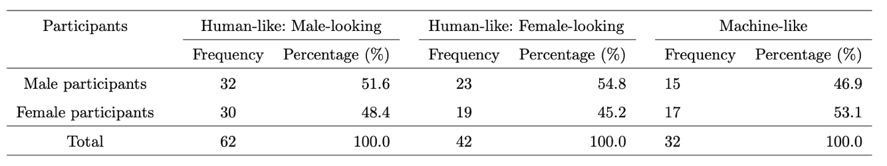
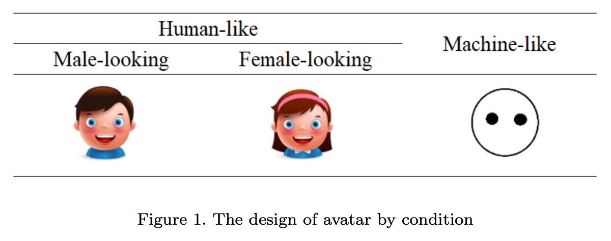

Examining the impact of chatbot avatars on users' perceived intimacy towards the chatbots.
GOAL
Today, chatbots are widely used, providing self-generated answers to a broad range of unexpected queries. Some are even designed to be used as mental health therapists. Chatbots including Wysa, Joyable, Talkspace, Woebot provide cognitive behavioral therapy (CBT) to patients through daily check ins and thought restructuring chats. To this trend, we wanted to understand the factors that can influence a person to feel more intimate towards a chatbot. This is an important issue to address because intimacy can largely influence satisfaction in using the chatbot. Hence, we conducted an experiment to discover the design of chatbot avatars on perceived intimacy towards the chatbots.- RQ: Does the design of the chatbot’s avatar affect user's perceived intimacy toward the chatbot? H1-a: Anthropomorphism of chatbot avatar (ACA) and user's gender affect perceived closeness toward the chatbot.
H1-b: ACA and user's gender affect self-disclosure towards the chatbot.
H2-a: Gender-stereotyping of chatbot avatar (GSCA) and user's gender affect perceived closeness toward the chatbot.
H2-b: GSCA and user's gender affect self-disclosure toward the chatbot.
PROCEDURE OVERVIEW
After obtaining approval from the institutional review board (IRB), we recruited 136 participants from private universities in South Korea.
Considering the nature of the questionnaires, we recruited participants aged 20 to 35 years.
The major age group was 20–25(46.8%), followed by 26–30(33.1%) and 31–35(18.0%).
The participants first received a Google form link to answer questions to the control variables.
Then, they randomly received a KakaoTalk (free messaging and video calling application) chat link to one of the three types of chatbots(machine-like, male-looking, female-looking).
Upon completion of the survey, participants were instructed to submit their cover letters for an evaluation.
Within 24 hours, participants received an email containing an evaluation paper containing an evaluation score on 6 criteria and a brief feedback on their cover-letters.
Same score and feedback was given out to all the participants.
The email also included a link to the 2nd survey, which measured the dependent variables (perceived fairness, credibility, and usefulness of the AI reviewer.)
4,500KRW was awarded to each participant upon completion of the experiment.
The chatbot started with the ice-breaking questions, followed by questions regarding individual differences (privacy concern, chatbot experience), followed by questions on perceived closeness toward the chatbot, followed by questions on self-disclosure.
Each participant, who completed all questions, received 5 dollars, 4,500 KRW as compensation for participation.
EXPERIMENT DESIGN
The experiment was conducted in a 2 X 3 factorial design.
Independent Variables
- ACA (Anthropomorphism of Chatbot Avatar) We categorized three designs of avatars (male, female, and machine) into the following two groups:
- GSCA (Gender Stereotyping of Chatbot Avatar) (1) male avatar
- User Gender (1) male participants
(1) High ACA (male and female)
(2) low ACA (machine).
(2) female avatar
(2) female participants

To measure the level of intimacy, we used perceived closeness and self-disclosure.
(1) “I feel a sense of closeness now using chatbot, Sam”
(2) “I feel friendly now using chatbot, Sam”
(3) “I feel emotionally close now using chatbot, Sam”
(4) “I feel familiar now using chatbot, Sam”
(1) “Answering the question ”
(2) “I don’t want to answer ”
(3) “I don’t know ”
(4) “I’m not interested ”
Control Variables
(1) “I am worried that postings written on the internet will be abused”
(2) “They worry about the possibility of theft when they write personal information to sign up for their homepage”
(3) “I’m worried because I don’t know how others will write what I posted on the Internet”
(4) “I am worried about writing or commenting on the internet because I can be used in unexpected ways”
(1) “I don’t know what chatbot is”
(2) “I know what chatbot is but haven’t used it”
(3) “I have used chatbot less than five times”
(4) “I have used a chatbot more than five times ”.
Manipulation check
Seven participants were recruited to test the manipulation of ACA (low versus high) before the survey. Three images of the avatars were presented, accompanied by questions:(1) “It looks human”;(2) “It looks friendly” ;(3) “It feels conscious”. The items were adopted and modified from (ji Hong, 2016; Song, 2019) and were measured with a 7- point Likert scale (1 = Strongly disagree; 7 = Strongly agree). Based on the responses, we conducted an independent t-test. The results of the t-test were statistically significant (p < 0.001, t(19) = 5.914. Human-like avatars had a higher mean(M = 5.333, SD = 1.029) than that of the machine-like avatar(M = 2.381, SD = 1.177). The internal reliability of the responses was validated with a Cronbach’s alpha = 0.872.
RESULTS
- H1-a: The anthropomorphism of chatbot avatar (ACA) and user gender affect his/her perceived closeness toward the chatbot. -> Male participants showed higher level of perceived closeness toward the chatbots.
-> Male participants who were assigned machine chatbots showed higher level of anthropomorphism toward the chatbots.
Main effect
user gender — perceived closeness (O)
ACA — perceived closeness (X)
Interaction effect
User gender — ACA (partially significant p < 0.1)
- H1-b: The ACA and user gender affect his/her self-disclosure level of the chatbot. -> There was no significant effect of ACA or user gender on user's self-disclosure toward the chatbots.
Main effect
user gender — self disclosure (X)
ACA — self disclosure (X)
Interaction effect
User gender — ACA (X)
- H2-a: Gender- stereotyping of chatbot avatar (GSCA) and user gender affect his/her perceived closeness toward the chatbot.
- H2-b: GSCA and user gender affect the self-disclosure level toward the chatbot. -> There was no significant effect of ACA or user gender on user's self-disclosure toward the chatbots.
Main effect
GSCA — perceived closeness/ self-disclosure (X)
user gender — perceived closeness/ self-disclosure (X)
Interaction effect
GSCA — user gender (X)
Further Analysis
We examined the response quality by examining the length of each response and frequency of negative expressions. Then, we conducted a MANOVA to examine whether the design of the chatbot avatar and user gender have notable effects on the response quality.The frequency of negative expressions was measured by the average use of negative expressions in the participants’ responses to the chatbot questions. After data preprocessing using the Natural language Toolkit (NLTK), the average frequency of eighteen negative expressions (e.g. ‘opposite’, ‘incorrect’, ‘negative’, ‘not particularly’, ‘not much’) was analyzed.
-> There was no significant effect of user's gender on user's quality of responses toward the chatbots.
-> There was a significant effect of ACA on user's length of responses toward the chatbots.
CONCLUSION
We explored the effects of chatbot avatars and user gender on users’ perceived intimacy toward the chatbot and found three insights.First, there was a significant effect of user gender on their closeness to the chatbot. Male participants displayed higher closeness than female participants. The results were especially significant for avatars with low anthropomorphism (machine-like). One of the potential reasons can be ascribed to the natural disposition of males. They tend to show more positive attitude toward computers than females (Whitley Jr, 1997).
Second, participants showed higher response rates to questions asked by machine-like chatbots than to human-like chatbots. From this, we can infer that the machine-like characteristics of the avatars elicited a low level of social presence (Go and Sundar, 2019), which allowed users to feel more comfortable about revealing their personal information.
Third, there was no significant effect of GSCA on users’ perceived intimacy toward the chatbot. This may be due to the use of text-based chatbots in the experiment, which reduced the effect of gender stereotype. Unlike voice, the static profile pictures did not remind the users of the chatbot’s gender, thus resulting in a low degree of gender stereotype.
CITATIONS
Berscheid, E., Snyder, M., Omoto, A.M., 1989. The relationship closeness in- ventory: Assessing the closeness of interpersonal relationships. Journal of personality and Social Psychology 57, 792–807.Vondracek, F.W., Marshall, M.J., 1971. Self-disclosure and interpersonal trust: An exploratory study. Psychological Reports 28, 235–240.
Jourard, S.M., 1959. Self-disclosure and other-cathexis. The Journal of Abnor- mal and Social Psychology 59, 428–431.
Jourard, S.M., Lasakow, P., 1958. Some factors in self-disclosure. The Journal of Abnormal and Social Psychology 56, 91–98.
Baron-Cohen, S., Wheelwright, S., 2003. The friendship questionnaire: An in- vestigation of adults with asperger syndrome or high-functioning autism, and normal sex differences. Journal of autism and developmental disorders 33, 509–517.
Mitchell, P.H., Powell, L., Blumenthal, J., Norten, J., Ironson, G., Pitula, C.R., Froelicher, E.S., Czajkowski, S., Youngblood, M., Huber, M., et al., 2003. A short social support measure for patients recovering from myocardial in- farction: the enrichd social support inventory. Journal of Cardiopulmonary Rehabilitation and Prevention 23, 398–403.
Hyman, C., Handal, P.J., 2006. Definitions and evaluation of religion and spiri- tuality items by religious professionals: A pilot study. Journal of Religion and Health 45, 264–282.
Kerr, M., Stattin, H., 2000. What parents know, how they know it, and sev- eral forms of adolescent adjustment: further support for a reinterpretation of monitoring. Developmental psychology 36, 366–380.
Tourangeau, R., Groves, R.M., Redline, C.D., 2010. Sensitive topics and reluc- tant respondents: Demonstrating a link between nonresponse bias and mea- surement error. Public Opinion Quarterly 74, 413–432.
Pioli, D.R., 1984. Study to determine the relationship between functional con- flict self-disclosure solidarity and satisfaction within marital dyads. Ph.D. thesis. The University of Montana.
Kim, A.R., 2020. A Study of the Effects of Interactivity, Attitude, and Attach- ment on Continuous Usage of AI Chatbot. Ph.D. thesis. The Graduate School of Kyung Hee University.
Sundar, S.S., Kim, J., 2019. Machine heuristic: When we trust computers more than humans with our personal information, in: Proceedings of the 2019 CHI Conference on Human Factors in Computing Systems, pp. 1–9.
ji Hong, E., 2016. A Study on the Anthropomorphic Effect depending on Inter- action Type: Based on Conversational Agent in Smart Home Context. Ph.D. thesis. Graduate School of Yonsei University.
Song, Y., 2019. Effects of agent’s expression of anthropomorphic interface and self-disclosure on user experience of chatbot. Ph.D. thesis. The Graduate School of Korea University.
Whitley Jr, B.E., 1997. Gender differences in computer-related attitudes and behavior: A meta-analysis. Computers in human behavior 13, 1–22.
Go, E., Sundar, S.S., 2019. Humanizing chatbots: The effects of visual, identity and conversational cues on humanness perceptions. Computers in Human Behavior 97, 304–316.